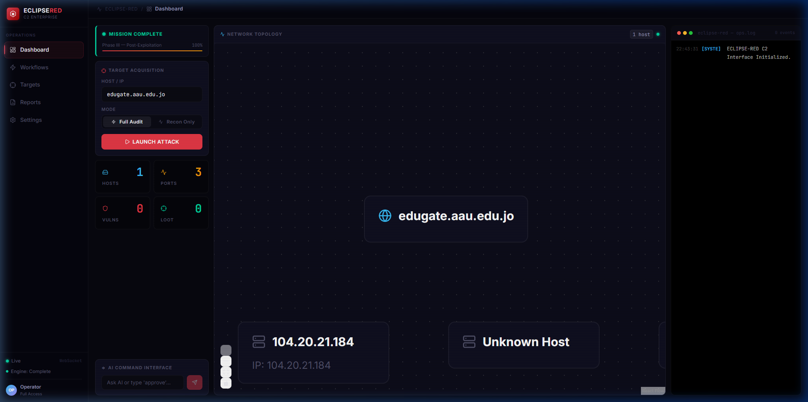

The Next Evolution in Offensive Cybersecurity: Transitioning from blind automated scanning to an autonomous multi-agent swarm that reasons, adapts, and executes within an isolated cyber range.
Experience how ECLIPSE-RED's agents cooperate in real time. Select an attack scenario below to observe the OODA decision matrix stream through the command bus.
Specialized micro-agents coordinated by an LLM-driven central controller, eliminating single points of failure and contextual hallucination.
OSINT & Passive Reconnaissance. Synthesizes public data, network topology, and passive banners to identify attack surfaces without alerting defensive sensors.
Weaponization & Exploitation. Synthesizes contextual payloads using LLM reasoning to bypass WAF logic, validating SQLi, IDOR, and auth flaws before reporting.
Post-Exploitation. Once inside target perimeter, maps lateral movement pivots, extracts environment credentials, and evaluates persistence viability with zero trace.
Surgical Target Verification. Deploys low-noise verification packets to confirm vulnerability validity without overwhelming endpoints or triggering IDS thresholds.
Threat Intelligence Core. Queries live vulnerability feeds, NVD, and ExploitDB to retrieve recent exploit techniques tailored to target software versions.
C2 Swarm Brain. Governs the OODA cycle. Enforces strict CIDR allowlisting, validates safety boundaries, prevents runaway loops, and emits real-time telemetry.
Full-spectrum operational dashboard delivering live terminal logs, attack graph topology, and multi-agent mission control.

Why heuristic AI agents surpass static vulnerability scanners in real-world red teaming.
| Capability | Traditional Scanners (Nessus, OpenVAS) | ECLIPSE-RED Autonomous Swarm |
|---|---|---|
| Vulnerability Chaining | Isolated checks; cannot chain | Chains Info Leak → IDOR → SQLi → Shell |
| False Positive Rate | High (reports based on version match) | Near Zero (verifies exploit viability first) |
| Business Logic Flaws | Cannot comprehend application logic | LLM reasoning analyzes state & parameters |
| Post-Exploitation / Lateral Move | Strictly out-of-scope for scanners | Ghost agent assesses internal pivot paths |
| Adaptive Payload Synthesis | Static, predictable signatures | Contextual zero-day style payload generation |